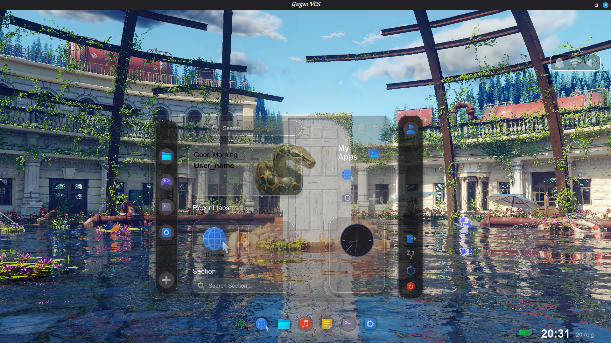
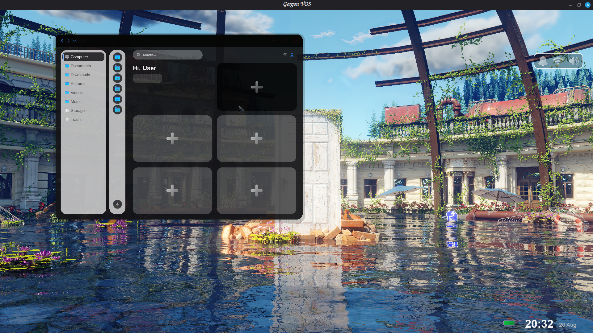
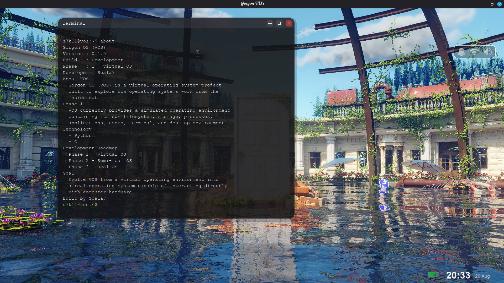
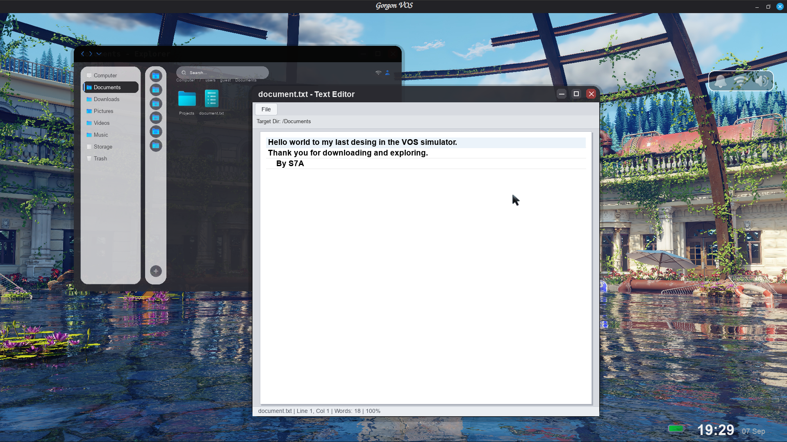

VOS (Virtual Operating System) is a project where I am building an operating system from the ground up while learning how operating systems, filesystems, applications, system architecture, and lower-level programming work. Rather than jumping directly into building a real operating system, I divided the project into three stages:
Phase 1
Simulator
✅ Complete
Phase 2
Custom OS
⏳ In Progress
Phase 3
Linux Distro
🔮 Future
Phase 1 is complete
Phase 2 is actively being worked on
Phase 1 — Simulator
Phase 1 focused on creating a functional simulated operating-system environment where applications, filesystems, storage, windows, and system components could communicate with each other. This phase gave me a foundation for understanding how the different parts of an operating system fit together before moving toward lower-level development.
Demo
Navigating through the VOS desktop environment:
Applications

Launcher

File Explorer

Terminal

Text Editor
Architecture
VOS Desktop │ Application Manager ├──Explorer ├──Editor ├──Terminal ├──Browser ├──Music Player └──Game │ VOS System Layer │ Virtual Filesystem │ Virtual Storage │ Host Computer
The important idea is that the applications are built around VOS's own system components, not the host system. This allows the simulator to behave more like an operating system instead of a collection of independent applications.
Phase 1 — Completed Features
Virtual desktop environment
Window management system
Virtual filesystem
Persistent virtual storage
File Explorer
Text Editor
Terminal / Shell
Application launcher
File creation and saving
Virtual directories
File operations (copy, move, delete)
Basic browser
Music player
Game application
Wallpaper settings
Applications
Terminal
The Terminal provides a command-line interface for interacting with VOS. It contains a shell implemented in C while the graphical terminal application communicates with it through the VOS architecture.
The File Explorer interacts with the VOS virtual filesystem and allows files and directories to be created, opened, and managed. It provides the graphical interface for navigating the simulated filesystem.
Text Editor
The Text Editor is connected to the virtual filesystem. It allows users to create, open, edit, and save text files stored inside VOS. This was one of the main applications used to demonstrate communication between an application and the VOS filesystem.
How the major components of an operating system fit together
How to design and implement a virtual filesystem
How window management and application lifecycles work
How to build a shell and command-line interface
How applications communicate with system components
How to structure a large project with multiple components
How to design for future expansion (Phase 2 → Phase 3)
Challenges
Designing a filesystem that feels like a real OS
Building a shell that can execute both built-ins and communicate with the system
Creating a window manager that handles multiple applications
Making the system feel like a cohesive OS rather than separate apps
Managing state between applications and the filesystem
Phase 2 — Semi-real (In Progress)
The goal of Phase 2 is to gradually move away from purely simulated components and begin implementing more realistic system-level functionality. This phase involves significantly more work with:
C and C++ for core system components
Computer architecture and memory management
Hardware interaction and drivers
Process management and low-level storage
Networking and system interfaces
Phase 2 is currently in development.
Phase 3 — Real OS (Future)
The long-term goal is to move beyond simulation and begin building an actual operating system capable of interacting directly with hardware. This will involve:
Boot process and kernel development
Memory management and CPU interaction
Drivers, filesystems, and hardware interrupts
Processes, scheduling, and system calls
Phase 3 is planned for the future.
Development Philosophy
VOS is not being built by immediately trying to reproduce an entire operating system. Instead, I am building it in layers:
Understand ↓
Simulate ↓
Connect ↓
Test ↓
Improve ↓
Replace ↓ Build for real hardware
Current Status
Phase 1 — Simulator: COMPLETE
The simulator currently provides a functional virtual desktop, application environment, virtual filesystem, storage system, terminal, window manager, and multiple system applications. The project is still under active development, with Phase 2 now in progress.